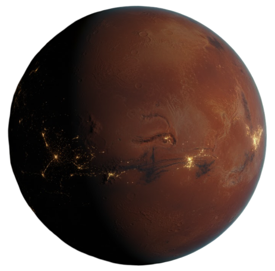
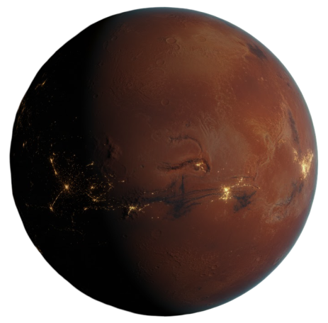

Minicurso de Git e GitHub
e GitHub
O que são:
Versionadores de arquivos e pastas
Git
Criador: Linus Torvalds
Permite que várias pessoas trabalhem em um projeto simultaneamente, mantendo um histórico de todas as alterações feitas. Cada desenvolvedor pode criar sua própria cópia (clone) do repositório do Git, trabalhar em suas mudanças em um ambiente isolado e, em seguida, mesclar (merge) essas mudanças de volta ao repositório principal. Isso torna o desenvolvimento colaborativo mais eficiente e ajuda a evitar conflitos
GitHub
Fundadores: Chris Wanstrath, Scott Chacon, Tom Preston-Werner,Hyett
Onde os repositórios Git são hospedados e podem ser acessados por qualquer pessoa com permissão. Desenvolvedores podem contribuir para projetos abertos enviando solicitações de pull (pull requests) para sugerir mudanças e melhorias. Além disso, o GitHub fornece ferramentas para rastrear problemas, gerenciar projetos, criar wikis e colaborar de maneira eficiente
A pasta .git é um banco de dados (repositório local) aonde estão, de fato, todos os arquivos e diretórios alterados.
Essa pasta é acessada e manuseada através de comandos no terminal.
Isso nos possibilita recuperar versões antigas de projetos de forma simples
Vantagens:
Ter o poder de “viajar no tempo” e colaborar em equipe
Como funciona:
Vamos entender o fluxo do Git e GitHub
Prática
Comandos Git para fluxo de trabalho
Git com repositório local
git init
git add .
ou
git add [nome do arquivo]
git commit -m “mensagem informativa”
Git com GitHub
git clone [http do repositório do GitHub]
git checkout -b [nova branch]
git switch -b [nova branch]
git add .
ou
git add [nome do arquivo]
git commit -m “mensagem informativa”
git push origin [nova branch]
git pull origin [branch que deseja "puxar"]